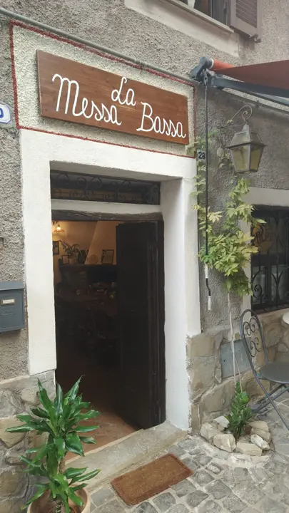
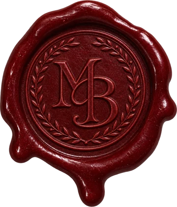
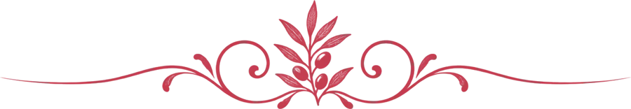

La Messa Bassa
Trattoria nel borgo di Pisoniano
Si apre la porta, entra il calore
Tavolate, vino e voci allegre
La cucina di una volta
I sapori del territorio, come un tempo
Cinque gradini di pietra
e la sala più raccolta della casa
Accomodatevi
Ecco il menù


Una trattoria nel borgo di Pisoniano
La Messa Bassa è in Via del Castello, tra i vicoli del centro storico. Dentro ci sono due sale: quella del camino, con le tavolate in legno e il bancone, e la saletta rialzata che si raggiunge salendo cinque gradini di pietra sotto l'arco.
Il menù è scritto a mano: piatti della tradizione come le sagne co' ghiù baccalà, il castrato in umido e la ciambella di San Biagio con ricotta, cannella e miele. In cantina, vini di Damiano Ciolli, Di Marzio e Il Moro accanto a qualche grande annata.

Dal vicolo al tavolo di marmo
Nel borgo di Pisoniano, in Via del Castello
Si arriva a piedi tra i vicoli del centro storico: cercate l'insegna in legno sopra il portone, al civico 28.
- Indirizzo
- Via del Castello, 28
00020 Pisoniano (RM) - Telefono
- 320 405 2810
- Prezzo medio
- 20-30 € a persona